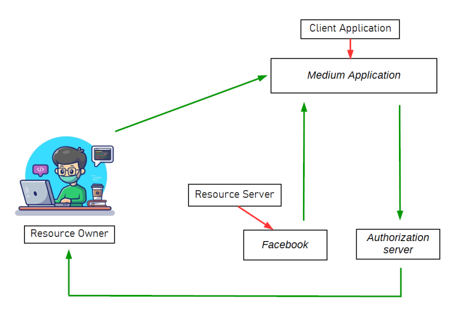
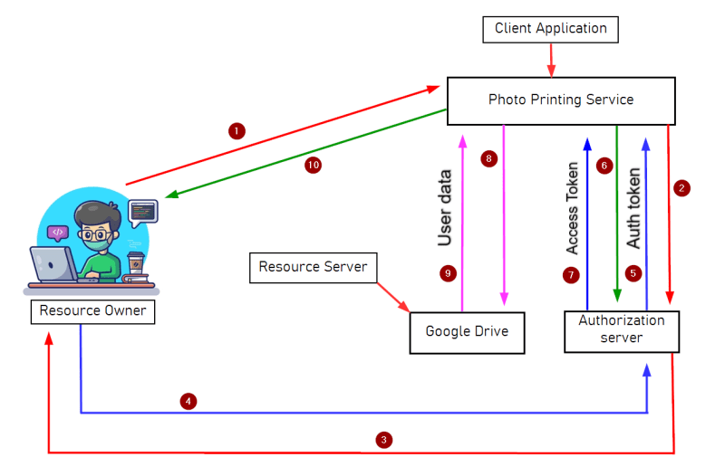
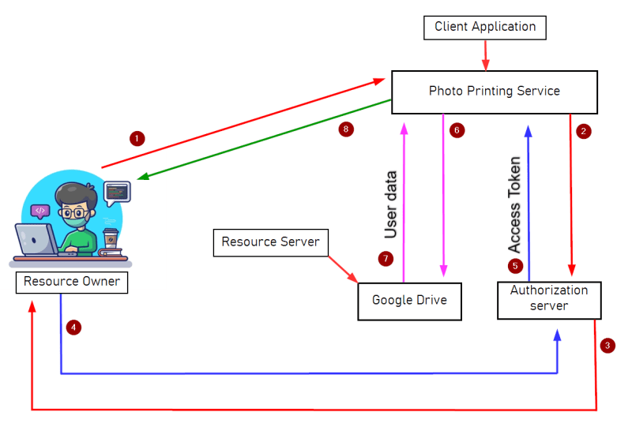

OAuth 2.0
While browsing the web, you’ve almost certainly come across sites that let you log in using your social media account. There is a high chance that this feature will be implemented using OAuth 2.0 framework. OAuth 2.0 is highly interesting for attackers because it is very common that developers might make implementation mistakes while implementing OAuth. These implementation mistakes can lead to several vulnerabilities, allowing attackers to obtain sensitive user data and potentially bypass authentication completely.
We are going to discuss about
▪ What is OAuth 2.0?
▪ OAuth Entities
▪ OAuth Flows (Grant Types)
▪ Authorization code grant
▪ Implicit Grant
What is OAuth 2.0?
OAuth stands for Open protocol for Authorization. OAuth provides developers an authorization mechanism to allow an application to access data or perform certain actions against your account, from another application (the authorization server). In simple words, OAuth 2.0 is an authorization framework. It enables third party application to obtain limited access to a service without sharing username & password.
Example: You want to sign in at medium.com, you will see that there are various methods to sign up. You clicked on “sign up with facebook” button which will get an ‘access token’ of the user from Facebook and uses this limited information form Facebook to create account.
Entities and terms used in OAuth flow
Before getting into the OAuth grant types, we need to understand Entities and terms used in OAuth flow. Let’s understand via an example. A Facebook user wants to sign in to the ‘Medium’ platform using Facebook. The entities associated with this flow are:
Resource Owner: An entity capable of granting access to a protected resource. (End user)
Client Application: client application is the application requesting authorization from the resource owner. In our example, this would be the Medium application.
Authorization Server: authorization server is the server issuing access tokens to the client application after successfully authenticating the resource owner and obtaining authorization. In our example, Facebook will be the Authorization server.
Resource Server: The resource server is the server handling authenticated requests after the application has obtained an access token on behalf of the resource owner. In our example, this would be Facebook.

Note: Often the Authorization server and Resource server are the same entity and can be called OAuth provider.
client_id: The client_id is a mandatory parameter containing the public unique identifier of the client application. This value is generated when the client application registers with the OAuth service.
response_type: Determines which kind of response the client application is expecting and, therefore, which flow it wants to initiate. For the authorization code grant type, the value should be code
scope: The scope is the requested level of access the client application is requesting from the resource owner
redirect_uri: The redirect_uri is the URL the user is redirected to after the authorization is complete. This is also known as the “callback URI” or “callback endpoint”. This should match the redirect URL that the user has previously registered with the service.
state: The state parameter stores a unique, random value that is tied to the current session on the client application. According to RFC it is optional, but this parameter serves as a form of CSRF Token for the client application by making sure that the request to its /callback endpoint is from the same person who initiated the OAuth flow.
grant_type: The grant_type parameter denotes what the grant type is, and which token is going to be returned.
code: This code is the authorization code received from the authorization server which will be in the query string parameter “code” in this request. This code is used in conjunction with the client_id and client_secret by the client application to fetch an access_token
access_token: The access_token is the token that the client application uses to make API requests on behalf of a resource owner
refresh_token: The refresh_token allows an application to obtain a new access_token without prompting the user
OAuth Flows (Grant Types)
The OAuth grant type determines the exact sequence of steps involved in the OAuth process. The grant type also affects how the client application communicates with the OAuth service at each stage, including how the access token itself is sent. For this reason, grant types are often referred to as “OAuth flows.”
An OAuth service must be configured to support a particular grant type before a client application initiates the corresponding flow. The client application specifies which grant type it wants to use in the initial authorization request to the OAuth service.
There are 4 different grant types, each with varying levels of complexity and security considerations.
1. Authorization Code Grant
2. Implicit Grant
3. Resource owner password credentials Grant
4. Client credentials Grant
We’ll focus on the “authorization code” and “Implicit” grant types as these are the ones that are used mostly in current OAuth implementations. To understand the flow in a better manner, keep an eye on the diagram with its number and understand the flow step by step.
Authorization Code Grant
Initially, the authorization code grant type looks quite complicated, but it’s actually simpler than you think once you’re familiar with a few basics. In short, the client application and OAuth service first use redirects to exchange a series of browser-based HTTP requests that initiate the flow. The user is asked whether they consent to the requested access. If they accept, the client’s application is granted an “authorization code.” The client application then exchanges this code with the OAuth service to receive an “access token,” which they can use to make API calls to fetch the relevant user data.

Implicit grant type
The implicit grant type is much simpler. Rather than first obtaining an authorization code and then exchanging it for an access token, the client application receives the access token immediately after the user gives their consent.
You may be wondering why client applications don’t always use the implicit grant type. The answer is relatively simple – it is far less secure. When using the implicit grant type, all communication happens via browser redirects – there is no secure back-channel like in the authorization code flow. This means that the sensitive access token and the user’s data are more exposed to potential attacks.
The implicit grant type is more suited to single-page applications and native desktop applications, which cannot easily store the client_secret on the back end, and therefore, don’t benefit as much from using the authorization code grant type.
